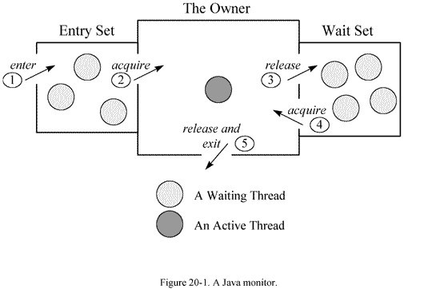
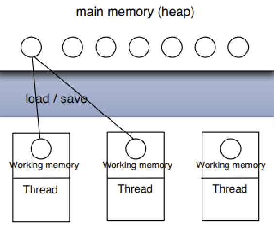

01_java_多线程
Java多线程
- 认识线程
- 创建线程
- 线程类Thread
- 线程同步
- 线程间的通信
- 线程的异常捕捉
- 线程池
- 原子类
1.认识线程
线程的定义
线程：进程中负责程序执行的执行单元。
进程：执行中的程序。一个进程至少包含一个线程。
单线程：程序中只存在一个线程。(主方法就是一个主线程)
多线程：程序中运行多个任务。(更好地利用cpu资源)线程的内存模型

线程的分类
用户线程： 默认初始化的线程。
守护线程：作为进程的守护者，当进程内没有其他非守护线程，则守护线程会被立刻销毁。调用setDaemon(true)方法，设置当前线程为守护线程。
2.线程创建
- 继承Thread类
1 | class MyThread extends Thread{ |
- 实现Runnable接口
1 | class MyRunnable implements Runnable{ |

- 实现Callable接口
可返回值的任务必须实现Callable接口，类似不返回值的任务必须实现Runnable接口。
执行Callable任务后，获得一个Future对象，调用该对象get()方法可获得Callable任务返回的Object。(结合线程池ExecutorService接口则可实现有返回值的多线程。)
FutureTask实现了两个接口，Runnable和Future，所以它既可以作为Runnable被线程执行，又可以作为Future得到Callable的返回值
1 | class MyCallable implements Callable<Object> { |
1 | // 创建一个线程池 |
3.线程类
对象方法
start();
isAlive();
getName()/setName();
getPriority()/setPriority();
setDaemon()/isDaemon();
join();//将当前线程加入其他线程中，同步执行(当前线程执行完后，继续其他线程)
interrupt();静态方法
currentThread();
sleep();//睡眠，不释放对象的锁
yeild();//让步，考虑线程优先级(优先级特性：继承/规则/随机)线程的状态

思考：停止线程
退出标志，run方法完成后停止线程/stop强行终止(不安全，不推荐)/interrupt中断线程。
关于中断：它并不像stop方法那样会中断一个正在运行的线程。线程会不时地检测中断标识位，以判断线程是否应该被中断（中断标识值是否为true）。中断只会影响到wait状态、sleep状态和join状态。被打断的线程会抛出InterruptedException。
Thread.interrupted()检查当前线程是否发生中断，返回boolean
synchronized在获锁的过程中是不能被中断的。
中断是一个状态！interrupt()方法只是将这个状态置为true而已。所以说正常运行的程序不去检测状态，就不会终止，而wait等阻塞方法会去检查并抛出异常。如果在正常运行的程序中添加while(!Thread.interrupted()) ，则同样可以在中断后离开代码体
4.线程同步
- synchronized关键字
Java每一个对象都有一个内置锁。（且只有一个）
当程序运行到同步方法或同步代码块时，自动获取执行代码的当前实例的锁。如果一个线程获得一个对象的锁，那么其他线程无法获得该对象的锁，直到第一个线程释放对象的锁。
Java每一个对象都有一个监视器，来检测并发代码的重入。
synchronized, wait, notify 是任何对象都具有的同步工具。wait/notify必须要存在synchronized块中。注意：三个关键字针对的时同一个监视器(某个对象的监视器)。
wait()方法：在其他线程调用此对象的notify()/notifyAll()之前，当前线程一致阻塞等待。
notify()方法：唤醒此对象监视器上等待的单个线程。（任意性）
notifyAll()方法：唤醒此对象监视器上等待的所有线程。
wait()执行后，会自动释放锁，notify()执行后，锁没有立即释放，由syncchronized同步块结束时释放。

1 | static int i = 0; |
- volatile关键字
多线程的内存模型：main memory（主存）、working memory（线程栈），在处理数据时，线程会把值从主存load到本地栈，完成操作后再save回去(volatile关键词的作用：每次针对该变量的操作都激发一次load and save)。
针对多线程使用的变量，如果不是volatile或者final修饰的，很有可能产生不可预知的结果（另一个线程修改了这个值，但是之后在某线程看到的是修改之前的值）。理论上，同一实例的同一属性本身只有一个副本。但是多线程是会缓存值的。而volatile修饰的变量线程是不会缓存的，直接取值。在线程安全的情况下，添加volatile修饰会牺牲一些性能。

- 显式锁Lock
在Java5中，专门提供了锁对象，利用锁可以方便的实现资源的封锁，用来控制对竞争资源并发访问的控制，这些内容主要集中在java.util.concurrent.locks包下面，里面有三个重要的接口Condition、Lock、ReadWriteLock。
- 闭锁CountDownLatch
- 关卡CylicBarrier
- 信号量Semaphore